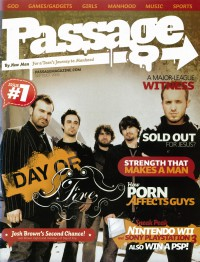

Day of Fire
|  |
| September 2006 Passage |
Media coverage:
- Nov 2004 in HM "Day of Fire", by Doug Van Pelt
- Dec 2004 in CCM "Ones to Watch: Love In A Dangerous Time", by Kelly O'Neil
- 2005 in Christian Guitarist & Bassist "Interview: Day of Fire", by Steven Douglas Losey
- Jul 2006 in HM "Interview: Day of Fire"
- Jul 2006 in CCM "Playing With Fire", by Christina A. Banister
- Sep 2006 in Passage "Second Chance", by Chad Bonham
- Mar 2010 in HM "Day of Fire", by Doug Van Pelt
- Mar 2010 in CCM Digital "Burning Bright", by Matt Conner
Albums & reviews:
2004: Day of Fire
- Oct 2004 in CBA Marketplace, by Sue Grise
- Nov 2004 in YouthWorker, by Dave Urbanski
- Nov 2004 in HM, by John J. Thompson
- Dec 2004 in CCM, by David A. Jenison
- Mar 2005 in Worship Leader
- Jul 2006 in HM, by Matt Conner
- Jul 2006 in CCM, by Brian Quincy Newcomb
- Mar 2010 in HM, by Dan MacIntosh
Award Summary (Nominations / Wins)
Dove Awards- 2005 Dove Awards
- New Artist
- Rock Album: Day of Fire
- Rock Recorded Song: "Cornerstone"
- 2005 Grammy Awards
- Best Rock Gospel Album: Day of Fire

© 2011 CMnexus. Last updated September 2019. Contact: editor -AT- cmnexus -DØT- org About